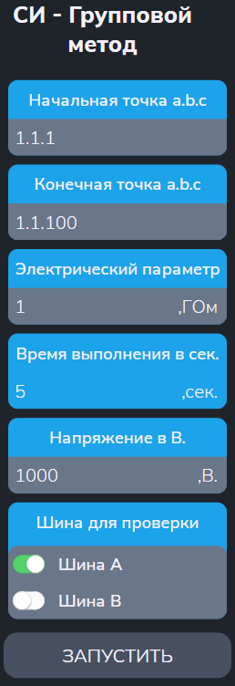

Тест СИ групповым методом
Тест позволяет измерить сопротивление изоляции коммутатора при подключении точек к шинам групповым методом.
Сначала появляется меню (см. рисунок 1):

Параметры
- "Начальная точка a.b.c" и "Конечная точка a.b.c" - начальный и конечный адреса диапазона проверяемых точек;
- "Электрический параметр" — заданное значение сопротивления для пороговой проверки (в ГОм);
- "Время выполнения в сек" - время выполнения (в сек);
- "Напряжение в В" - измерительное напряжение (в В);
- "Шина" — заданная шина для подключения групп точек (A или B).
Алгоритм проверки
Подготовка:
- Установить заданный режим высоковольтной испытательной установки;
- Контроль сопротивления изоляции между шинами A1 и B1. При заниженном сопротивлении изоляции выводится «Замыкание шин A1 и B1» и тест завершается.
Для всех БК из диапазона выполняется цикл групповых разбиений.
Для каждого разбиения
-
Подключить точки текущего разбиения к выбранной шине,
остальные — к альтернативной.
Разбиение проводится по значению текущего разряда двоичного адреса точек.
Если в текущем разряде адреса 1, то точка подключается к шине A, иначе к B. -
Контроль сопротивления изоляции.
Если получено заниженное значения сопротивления изоляции – формировать сообщение о браке. - Во время проверки появляется сообщение, например: "Результат измерения разряда: 0000001 [НОРМА (БРАК)]" - где 1 показывает текущий проверяемый разряд.